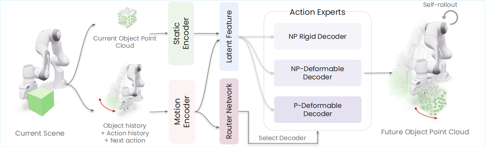

Overview
Abstract
A robotic world model should predict how objects evolve under robot actions and physical dynamics. While recent 3D world models have shown strong predictive capabilities, they still struggle with the heterogeneous dynamics arising from diverse object interactions. To address this in a unified framework, we decompose robotic interactions into distinct physical regimes and assign each to a specialized motion expert. We introduce MoRE, a 3D world model with a mixture of motion experts organized around rigid, deformable, and prehensile dynamics. This design enables a single model to capture diverse physical behaviors while preserving regime-specific priors. Trained on mixed simulation and real-world data, MoRE integrates with Model Predictive Control (MPC) to support diverse manipulation tasks. Experiments show that MoRE improves prediction accuracy across physics regimes, leading to stronger real-world MPC performance.
Approach
Method Overview

Walkthrough
Visualization Results
The representative samples span rigid and soft objects under non-prehensile and prehensile interactions across both simulation and real-world settings, covering diverse contact dynamics and interactions.